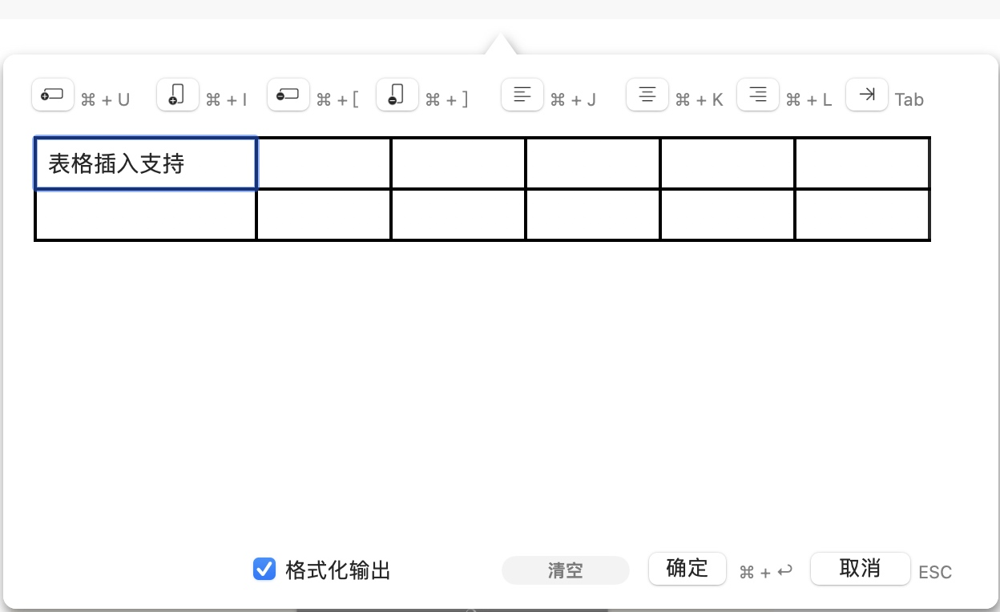

Markdown 语法输入辅助
macOS 版 MWeb 中：
所有支持的 Markdown 语法都可以在“语法”菜单或者工具栏上的 “Aa” 按钮下找到，所有语法都附带有快捷方式，以方便快速输入。另外，如果你喜欢使用工具栏，可以使用菜单：视图 - 自定义工具栏 来自定义工具栏上的语法输入按钮。
iPadOS/iOS 版 MWeb 中：
所有支持的 Markdown 语法都可以在虚拟键盘的工具条中找到。在 iOS 中，由于屏幕比较小，可以点击工具条上的 “M” 按钮，查看所有语法按钮。如果要自定义工具条上的按钮，可以点击编辑器右上角的 “AA” 按钮，再点击 “自定义键盘工具条按钮及顺序” 来自定义。如果要查看快捷键，可以按住 “CMD” 键查看。
边编辑边预览和大纲视图
所有平台都支持边编辑边预览模式和大纲视图，相关快捷键如下：
- 切换编辑和预览：
CMD + R - 切换边编辑边预览：
CMD + 4 - 显示和隐藏大纲视图：
CMD + 7
以上功能在工具条上也有相关的按钮，在 macOS 版 MWeb 中，还可以选择大纲视图的显示方式，目前有三种：固定在编辑器左边、固定在编辑器右边、浮动显示。可以使用 “视图” 菜单来修改这个设置。
编辑器主题及预览样式
macOS/iPadOS/iOS 现在都有暗主题和亮主题，所以 MWeb 也可以分别设置系统暗/亮主题时使用的主题。macOS 版 MWeb 中可以在 偏好设置 - 主题 & 样式 中设置，iOS 版 MWeb 可以点击编辑右上角的 “AA” 按钮设置，也可以在设置页面中设置。
MWeb 4.x 的预览样式是和编辑器样式合并在一起了，统称为“主题”。如果要自定义编辑器样式或者预览样式，需要先自定义主题。在 macOS 版 MWeb 中，可以在 偏好设置 - 主题 & 样式 中，点击“自定义主题”按钮；iPadOS/iOS 版 MWeb 中，可以点击编辑右上角的 “AA” 按钮，再点击当前的主题按钮，在出来的主题切换界面中，点击右上角的“...” 按钮进行自定义主题。
如果要自定义预览样式，要注意自定义主题编辑界面中的 “按编辑器主题自动生成预览 CSS” 这个复选框。如果勾选这个复选框，MWeb 会按当前定义的编辑器主题的颜色，自动生成相关的 CSS 样式，如果有需要，你也可以在下边的输入框中填入重新定义的 CSS 样式；如果不勾选，则不会生成相关 CSS 样式，这样的话，你就可以在下边的输入框中填入自己的完整的 CSS 样式了。
对图片的相关支持
Markdown 是纯文本文件，它不附带任何图片和其它附件，图片和附件都是用引用的方式，是保存在 Markdown 文本之外的地方的。Markdown 最主要也是最重要的特性是“易读易写”，为了更突出这两个优点，我认为直接能查看引用的图片是很有必要的。因此，MWeb 可以在编辑器中直接显示 Markdown 引用的本地和网络图片。这个功能有四种设定：显示图片、显示缩略图、浮动显示图片和不显示图片。如果要修改设置，macOS/iPadOS/iOS 中都可以在偏好设置中设置，macOS 中也可以点击工具条上的 “眼睛” 按钮设置，iPadOS/iOS 中可以点击编辑器右上角的 “AA” 按钮设置。
macOS/iPadOS/iOS 都支持复制、粘贴方式插入图片和拖拽方式插入图片，当然，也可以使用工具条上的插入图片按钮插入图片。
如果你是在 macOS 中，请做以下尝试来进一步了解 MWeb 插入图片的方面之处：
- 按下
Ctrl + CMD + Shift + 4键，拖动然后截图，在 MWeb 中，按CMD + V键粘贴，即可插入图片。如果你要插入 PNG 格式的图片，可以使用菜单：编辑-粘贴为 PNG。 - 在浏览器（如：Safari）中，找到一张图片，然后
右键图片-复制图片，返回 MWeb，按CMD + V粘贴即可插入图片。 - 直接从 访达（Finder） 中拖拽图片到 MWeb 编辑器中插入图片。
- 在访达（Finder）中，找到一张图片文件，按下
CMD + C，返回 MWeb，按CMD + V即可插入。 - 使用菜单：
语法 - 把多张图片合并成一张，体验一下 MWeb 的拼图功能。 - 在网站中找一篇带图片和文字的文章，选中图片和文字后，按下
CMD + C复制，返回 MWeb，使用菜单：编辑 - 把 HTML 粘贴为 Markdown。这样会自动把网页转为 Markdown。如果要下载网页中的网络图片，可以使用菜单：编辑 - 远程图片下载来把图片下载到本地。
设置图片宽度
MWeb 引入的特别的语法来设置图片宽度，方法是在图片描述后加 -w + 图片宽度 即可，比如说要设置上面的图片的宽度为 140，语法如下：

MWeb 对插入表格的支持
你可以按工具栏上的插入表格按钮来插入表格，也可以用快捷键 Ctrl + Shift + T，如下图为 macOS 上的表格插入支持，iPadOS/iOS 上也有此功能：

对于已存在的表格，你可以把光标移动到表格代码内，然后使用插入表格功能来修改已存在的表格。你可以先插入一张表格，然后再尝试修改。
MWeb 对 LaTeX，mermaid，echarts 书写的辅助
在 MWeb 编辑器中，光标移到 LaTeX中间，即可以预览 LaTeX 公式，如果修改公式，预览也会实时更新，如下图为 LaTeX 公式的辅助，mermaid，echarts 的辅助也是一样效果：